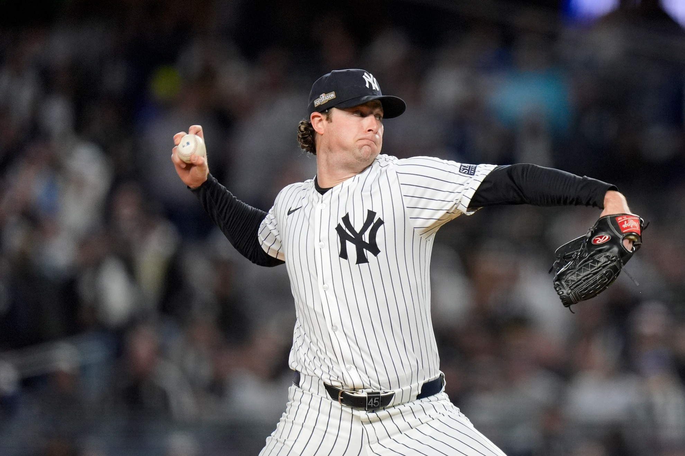
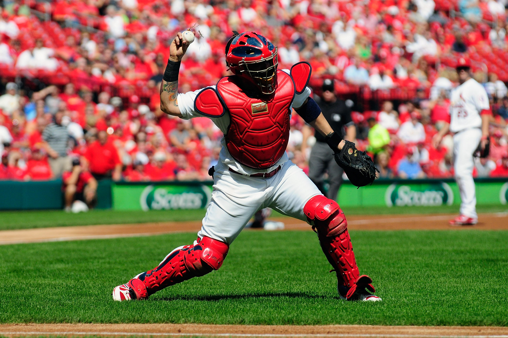
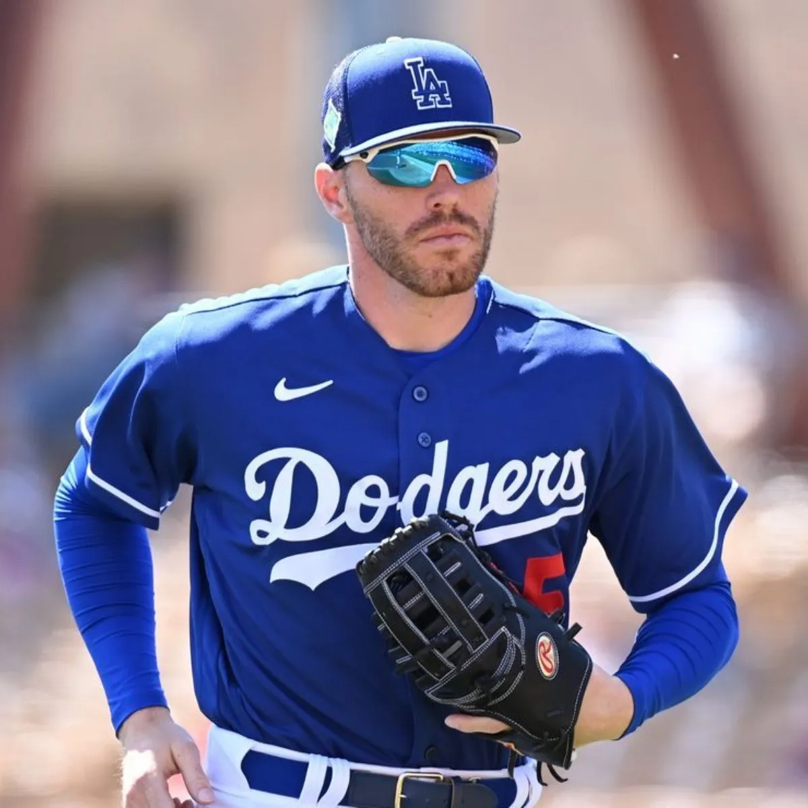
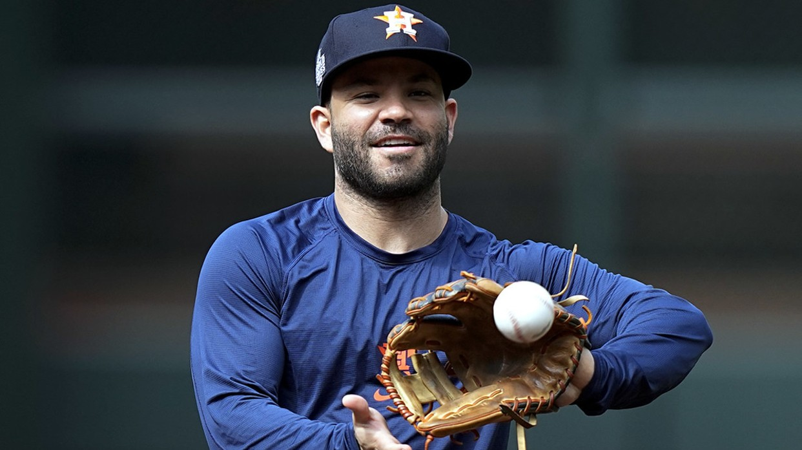
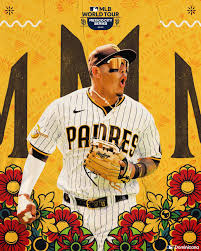
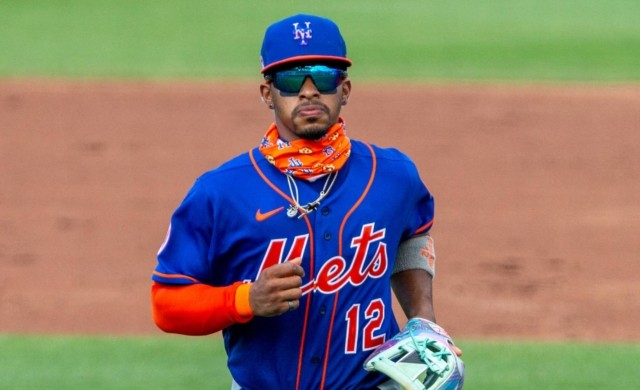
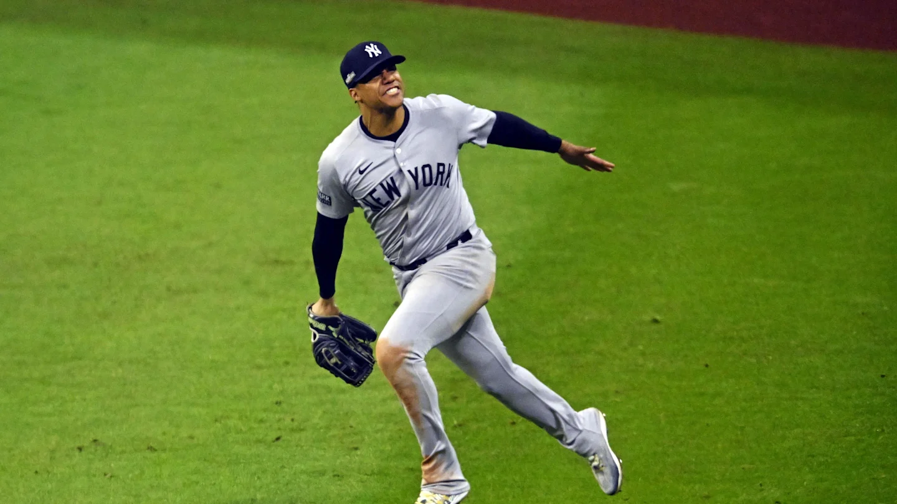
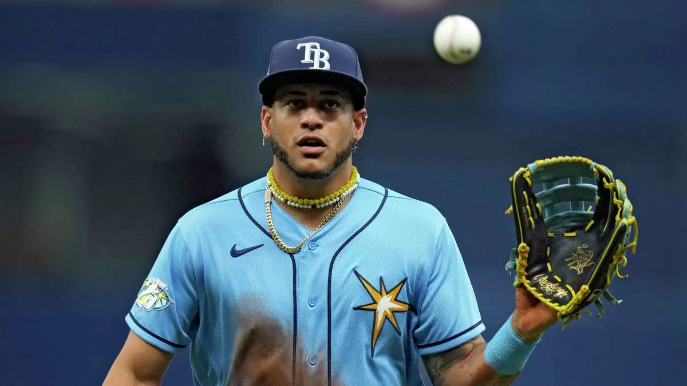
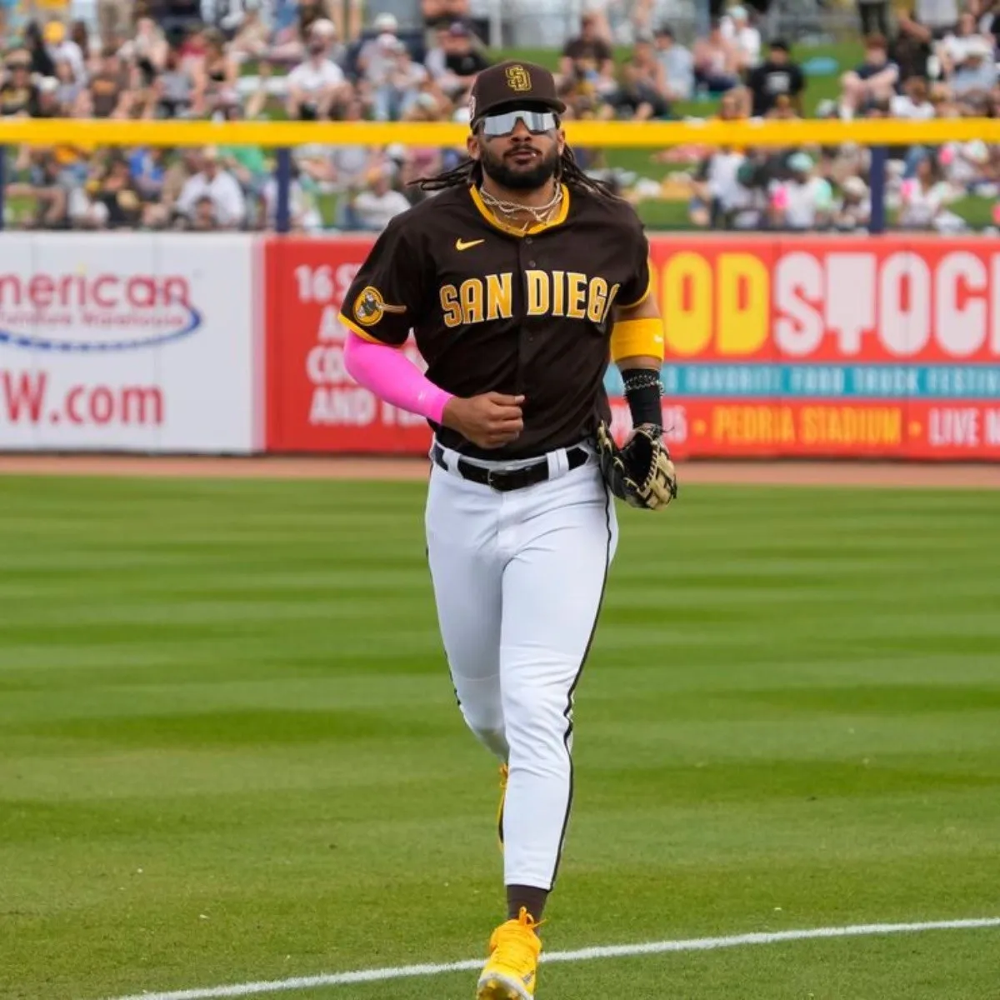

Pícher (Lanzador)
Controla el juego lanzando la pelota al receptor.

Cátcher (Receptor)
Recibe los lanzamientos y dirige a los jugadores defensivos.

Primera Base
Defiende la primera base y asiste en jugadas rápidas.

Segunda Base
Se encarga de la defensa en el campo interno.

Tercera Base
Protege la tercera base contra batazos potentes.

Campocorto
Defiende entre la segunda y tercera base.

Jardín Izquierdo
Cubre la zona izquierda del campo exterior.

Jardín Central
Responsable del centro del campo exterior.

Jardín Derecho
Cubre la zona derecha del campo exterior.